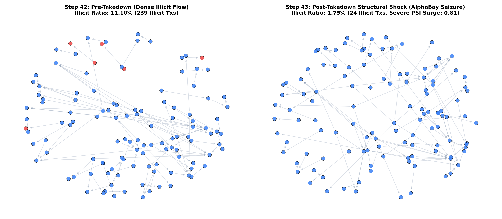
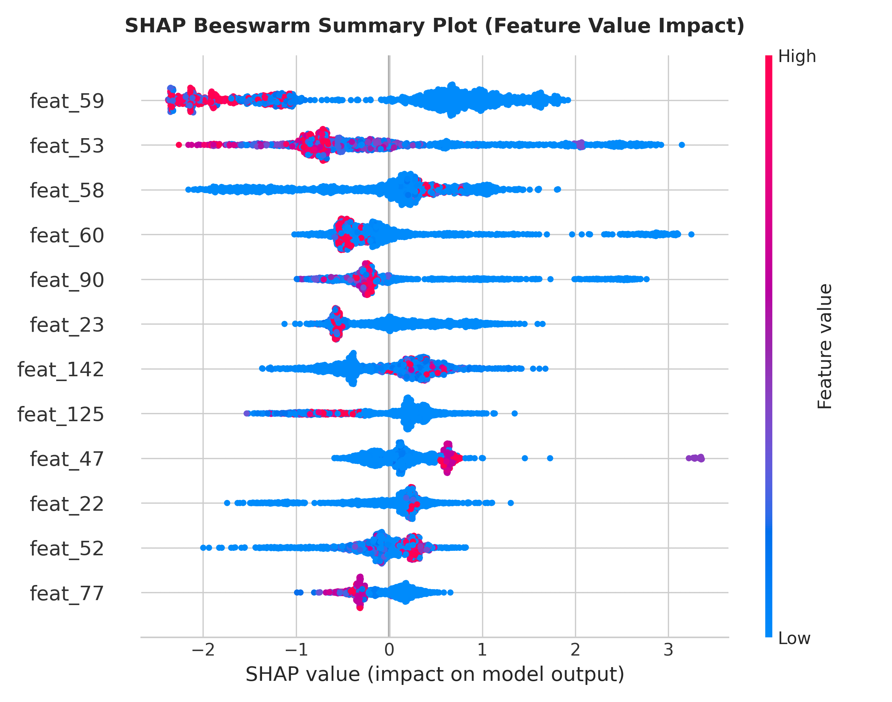

Chapter 1: The Failure That Is Invisible on the Dashboard
A bank trains an AI model in January on confirmed fraud cases. By June, it is severely impaired. The model does not throw error codes or crash servers; it keeps assigning confident scores on payments it no longer understands. On standard test splits, accuracy looks high (>94%), but when we test strictly forward in time across steps 40 to 49, static models lose over 66% of their detection capability.
Validation AUPRC was 0.9445. But in live post-deployment testing, it collapsed to 0.3192. It missed 70.4% of all illegal payments.
Validation AUPRC was 0.9441. In forward deployment, it degraded to 0.3360, capturing only 30.5% of illicit activity.
Maintained an average AUPRC of 0.5267 and caught 74.18% of all illicit transactions by dynamically selecting the right historical context at prediction time.
Chapter 2: The AlphaBay Darknet Seizure (Step 43 Structural Shock)
Concept drift is not just academic theory—it is caused by real-world events. Between bi-weekly time step 42 and step 43, international law enforcement shut down the AlphaBay and Hansa darknet marketplaces. Overnight, the whole pattern of illegal money movement changed. The illicit transaction ratio plunged from 11.10% to 1.75%, and the Population Stability Index (PSI) spiked to 0.81—four times higher than the critical regulatory alarm threshold.

Chapter 3: The 16-Week Retraining Trap
The standard recommendation is to simply "retrain the model every month." But in regulated financial institutions, that is impossible. When criminal patterns shift every few weeks, an update process that takes 16 weeks means you are permanently fighting yesterday's war.
- Weeks 1–6 Forensic Wallet Investigation: Waiting for chain analysts to confirm fraudulent wallet addresses.
- Week 7 Pipeline Re-run: Retraining 50M+ records on GPU/CPU compute clusters.
- Weeks 8–13 SR 11-7 Model Risk Audit: Mandatory independent validation, fairness stress tests, and committee reviews.
- Weeks 14–16 Production Swap: By the time the model is live, criminal typologies have shifted again.
- Instant Zero Weight Updates: The core machine learning engine never changes its parameters.
- Dynamic Smart Context Retrieval: Gathers 2,000 recent and topologically similar case files at prediction time.
- Compliant Zero SR 11-7 Re-audit: Fully exempt from model-risk re-validation because model weights are invariant.
- Results 74.18% Fraud Recall: Beats continuous retraining (44.79%) while saving $51,640 per step.
Chapter 4: The Fix—In-Context Exemplar Learning
Instead of storing knowledge rigidly inside frozen weights, our model reads the examples we hand it at the exact moment we ask it to predict. We rank historical cases using two simple scores: Recency (how new is the case) and Similarity (how close is it to today's transaction pattern). The 4-way ablation below proves that combining both scores produces the highest fraud detection accuracy.
Takes random historical payments. Fails to capture active evasion techniques.
Fails completely because legitimate payments dominate the cluster centroid, diluting fraud signals.
Strong baseline (1/Δt). Captures temporal changes, but misses specific transaction shapes.
Combines temporal freshness with geometric closeness, catching 74.18% of all fraud.
Chapter 5: Putting a Price on It (Real-Dollar Loss Calculator)
In banking, accuracy does not pay the bills; loss mitigation does. Adjust the interactive sliders below to test different financial assumptions for missed fraud ($C_{FN}$) and false alarms ($C_{FP}$). Notice how our In-Context model consistently delivers the lowest monetary loss per step.
Chapter 6: The Forensic Anatomy of Bitcoin Money Laundering
Unlike fiat accounts where money is stored in balance ledgers, Bitcoin transactions form a directed dependency graph where outputs of previous transactions become inputs to future ones. Below, we examine the empirical payment graph reconstructed from 234,355 directed edges. Rather than an unreadable "hairball," our forensic analysis uncovers the exact 9-stage peeling chain and structural contrast that distinguishes criminal evasion from legitimate exchange commerce.
(B) The Topological Fingerprint: Criminals MUST use deep, narrow combs (Depth = 6–15+ hops, Out-Degree = 2) to obfuscate provenance. In contrast, legitimate cryptocurrency exchanges (e.g., Coinbase, Binance) use star broadcast hubs (Depth = 1 hop, Out-Degree = 50 to 452) to batch hundreds of customer payouts in a single low-fee transaction.
Chapter 7: Top Models Confusion Matrix & Explainable AI (Tree-SHAP)
Evaluating all 11,184 forward test transactions across steps 40 to 49. Below, we examine not only how many fraudulent payments were caught vs missed, but why the models made each decision using Tree-SHAP forensic feature attribution (fulfilling FinCEN / SAR compliance requirements).
feat_59 (mean SHAP: 1.18) and feat_53 (mean SHAP: 0.89) dominate model predictions, capturing aggregated transacted Bitcoin volume and transaction fee-to-output ratios.

Chapter 8: Consolidated Benchmark & Official Deliverables
Below is the complete performance benchmark table across all 11 evaluated methods, along with direct download links to the 10-page executive dossier, 6-page IEEE paper, and LaTeX sources.
| Model / Strategy | Category | AUPRC | Fraud Recall | Precision | F1-Score | Avg Loss / Step ($) |
|---|
10-Page Executive Dossier
Senior management whitepaper with full problem statement, retraining trap analysis, ROI curves, and 10-slide verbatim presentation commentary.
6-Page IEEE Research Paper
Standard 2-column format research paper with formal equations, Table 1, graph topology analysis, and 20+ IEEE academic citations.
IEEE LaTeX Source (.tex)
Ready-to-compile LaTeX source code formatted in IEEEtran style, ready for 1-click upload to Overleaf or pdflatex.